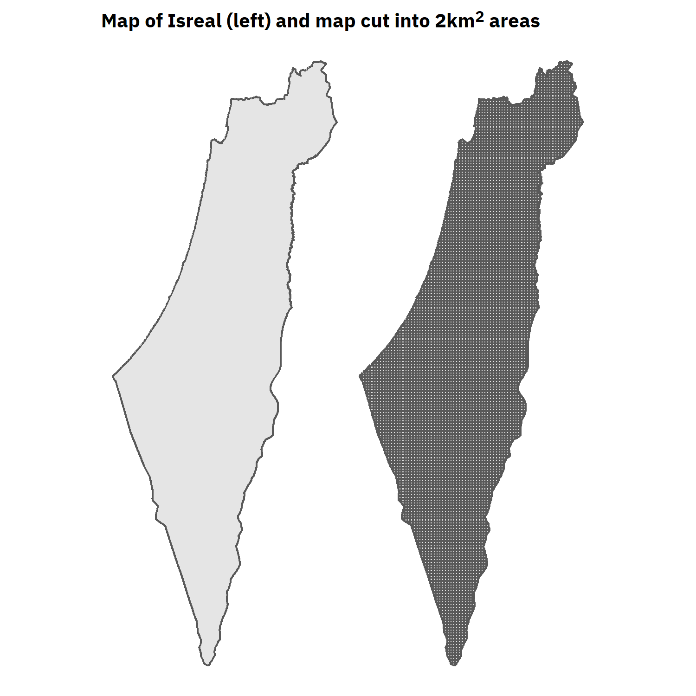
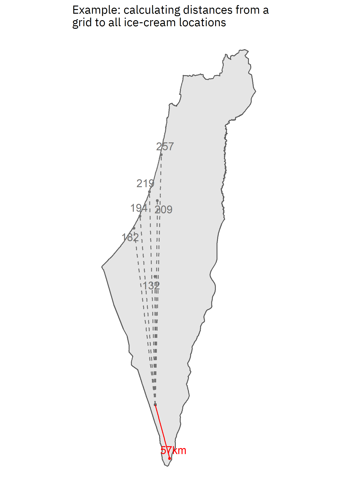
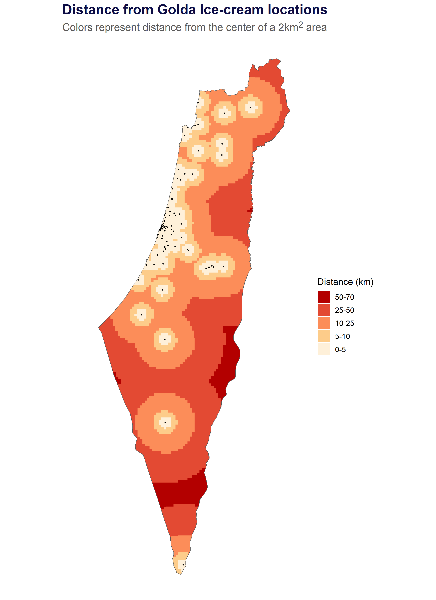
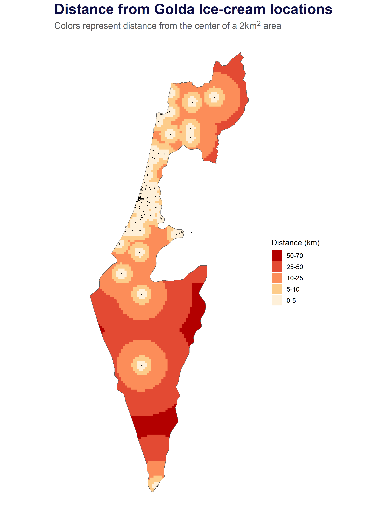

This past November I participated on several occasions in the #30DayMapChallenge, a daily mapping visualization challenge. While I was satisfied with what I came up with, my main outcome was that I have no idea how to work with maps. That is, I might be able to fiddle around and hit home eventually, but my knowledge of Coordinate Referencing Systems (CRS) and other important features was limited. For that purpose, I knew I’ll be back to explore some additional geographic data, leading to the following post.
In this blog post I’ll explore Golda Ice-cream locations throughout Israel. My wife and I came across Golda one day and were happily surprised when first tasting it: the ice-cream was fantastic, especially compared to the common ice-cream shops we came across. To follow through with my motivation to learn more about maps, I decided to explore Golda’s ice-cream locations, both as a means for the learning process and as a tribute to their really great ice-cream.
Following a short overview of the data collection and ice-cream locations throughout Israel will address the important question pertaining distances:
Where do you not want to be if you want an ice-cream now?
That is, we’ll look at distances from various points in the country to the nearest ice-cream location. The post will contain outputs and some code here and there. However, I will not address any of the code, and some of it will not be displayed altogether. but you can find the source code for the following post [here].
The full script for web-scarping Golda’s location can be found [here]. It was an interesting process in which I scraped the data, cleaned it and did some minor final aesthetics manually. To get the exact locations, I used the Hebrew addresses to geocode them and recieve a corresponding latitude & longitutde coordinates. To mitigate any concerns I then reverse geocoded those longititude and latitude which returned the address of the location in English. Any addresses in English that didn’t match the Hebrew ones I manually checked for the correct location (about 2-3 that were 250m off). Some locations might still not be exact, but overall I think we’re good to go.
Our final dataset looks as follows:
golda_locationsEach row represents a store, the city and street it’s located in, their phone number and a corresponding longitude and latitude. A few stores on the website were noted as currently closed, but for the sake of this post will treat them like all others.
Let’s see where they are across Israel:
regular_map <- leaflet() %>%
addTiles(data = golda_locations) %>%
addMarkers(data = golda_locations, icon = ice_cream_icon, label = ~ ice_cream_labels)
A quick overview of our map shows that majority of Golda’s location are near the center of Israel in the Tel-Aviv metropolitan area. Other locations are scattered across the country with several in the north and a few down south. At least there’s one in Eilat which we can visit when we go see my wife’s family.
We want to measure distances from various locations to the nearest ice-cream location. However, ‘various locations’ is somewhat of an abstract phrase; we need specific locations. In order to tackle that piece we’ll use grids:
golda_projected <- golda_locations %>%
st_as_sf(coords = c("lon", "lat"), crs = 4326)
golda_meters <- st_transform(golda_projected, crs = 2039)isr_map_sf <- st_transform(st_read("maps/israel_borders.shp"), 4326)
# Project the map
isr_map <- st_transform(isr_map_sf, crs = 2039)
# Make square grid
new_isr <- st_make_grid(isr_map, cellsize = 2000)
grid <- st_intersection(new_isr, isr_map)library(extrafont)
library(patchwork)
theme_set(theme_void()+
theme(text = element_text("IBM Plex Sans")))
patch_theme <- function(){
theme(plot.title = element_markdown(size = 12, hjust = 0.5))
}
p1 <- ggplot(isr_map_sf)+
geom_sf()+
labs(title = "Map of Israel")+
patch_theme()
p2 <- ggplot(grid)+
geom_sf()+
labs(title = "Map cut into 2km<sup>2</sup> areas (grid)<br>")+
patch_theme()
both_maps <- p1+p2
ggsave("plots/both_maps.png", plot = both_maps, height = 5, width = 5)
On the left we have our original shape file of Israel and on the right the same map cut into 5 squared kilometers areas (5km\(^2\)). By cutting the map into grids we can measure distances to the various ice-cream location. Considering the ice-cream shops are somewhat identical in what the offer, the nearest ice-cream location can suffice. In that case we’ll measure distances and take the nearest location, i.e. where the distance is at minimum. Let’s have a look at an example of one grid cell to several locations:
golda_meters <- st_transform(st_geometry(golda_projected), crs = 2039)
sample_grid <- st_transform(grid, crs = 4326)
dataum <- data.frame(
geometry = st_geometry(golda_projected[3:9,]),
location_grid = st_centroid(rep(sample_grid[350,],7)))
sample_grid_polygon<- sample_grid[350,]
data_lines <- map_dfc(dataum, ~ st_transform(.x, crs = 2039))
sample_data <- data_lines %>%
map_dfc(~ st_transform(.x, crs = 4326) %>% st_coordinates(.x)) %>%
map_dfc(as.data.frame) %>%
set_names(c("golda.x","golda.y", "us.x" ,"us.y")) %>%
cbind(distance = map2_dbl(data_lines$geometry, data_lines$geometry.1, st_distance),
location_polygon = st_transform(data_lines$geometry.1, crs = 4326)) %>%
mutate(relevant = ifelse(distance == min(distance), "yes", "no"),
distance = ifelse(relevant == "yes", paste0(round(distance/1000, 0), "km"), round(distance/1000, 0)))
ggplot(isr_map_sf)+
geom_sf()+
geom_sf(data = sample_grid_polygon, aes(geometry = geometry))+
geom_point(data = sample_data,mapping= aes(x = golda.x, y = golda.y, color = relevant), size = 1)+
geom_spatial_segment(data = sample_data, mapping = aes(x = us.x, xend = golda.x, y = us.y, yend = golda.y, linetype = relevant, color = relevant), show.legend = FALSE)+
# geom_point(data = sample_data,mapping= aes(x = us.x, y = us.y), color = "red", size = 0.1)+
geom_spatial_text_repel(data = sample_data, mapping = aes(x = golda.x, y = golda.y, label = distance, color = relevant), crs = 4326, hjust = 0.5, size = 4)+
scale_color_manual(values = c("yes" = "red", "no" = "gray45"))+
scale_linetype_manual(values = c("dashed","solid"))+
xlim(34,36)+
# Remove legends
guides(color = "none")+
labs(title = "Example: calculating distances from a\ngrid to all ice-cream locations")+
theme(plot.title = element_text(size = 12))ggsave("plots/example.png", width = 5, height = 7)#knitr::include_graphics("plots/example.png")
#{height=250px}
Our square represents a 5km\(^2\) area somewhere in southern Israel. The various dashed lines and corresponding value represent the distance to all the ice-cream location in our subsample. Since we’re interested in minimal distance, I highlighted the location most nearest to our grid. The nearest ice-cream location to the center of our grid is 42km away.
Once we understood how each grid’s nearest distance is achieved we can do so for all the areas we created. This will result in a map indicating the nearest Golda ice cream shop within a 5km^2 distance:
distances <- st_distance(golda_meters, st_centroid(grid)) %>%
as_tibble()
golda_distances <- data.frame(
us = st_transform(grid, crs = 4326),
# Extract minimum distance for each grid
distance_km = map_dbl(distances, min)/1000,
# Extract the value's index for joining with the ice-cream loc info
location_id = map_dbl(distances, function(x) match(min(x), x))) %>%
left_join(golda_projected, by = c("location_id" = "id"))# Draw map
grid_polygons <- golda_distances$geometry.x
ice_cream_icon <- makeIcon("ice-cream.png", iconWidth = 6, iconHeight = 8)
bins <- c(70,50,25,10,5,0)
pal <- colorBin("OrRd", domain = golda_distances$distance_km, bins = bins)
Sys.setlocale("LC_ALL", "Hebrew")
#font-family:Calibri;font-size:14px;
make_label_distances <- function(x, y, n){
glue("
<span style='text-align:left;'>
You are <b>{round(x, 0)} km</b> from the nearest location at:</span>
<span style='text-align:right;dir=rtl;'><br>
{y}, {n}</span>") %>%
HTML()
}
# Create labels using a custom made function
ice_cream_labels <- pmap(list(golda_distances$distance_km, golda_distances$street,golda_distances$city ), make_label_distances)
full_map <- leaflet() %>%
addTiles() %>%
addMarkers(data = golda_projected, icon = ~ice_cream_icon, group = "Ice-cream locations") %>%
addPolygons(data = grid_polygons, fillColor = pal(golda_distances$distance_km), fillOpacity = 0.8, weight =0,
opacity =1, color = "transparent", group = "Distances", popup = ice_cream_labels,
highlight = highlightOptions(weight = 2.5, color = "#666", bringToFront = TRUE, opacity= 1),
popupOptions = popupOptions(autoPan = FALSE,closeOnClick = TRUE, textOnly = T,
style = list("size" = "22"))) %>%
addLegend(pal = pal, values = (golda_distances$distance_km), opacity = 0.8,
title = "Distance in Km", position= "bottomright") %>%
addLayersControl(overlayGroups = c("Ice-cream locations", "Distances"),
options = layersControlOptions(collapsed = FALSE))
# htmlwidgets::saveWidget(full_map, "full_mape.html")
Beautiful! Well, mainly for those living near ice-cream locations.
The main outcome is you don’t want to be stuck somewhere in the south or south of the dead sea with a sudden craving for ice-cream. We also see that similar to before, living in the Tel-Aviv metropolitan area you should be covered with a Golda location near you.
We can also visualize it on a static map enabling us to easily share it as an image. This time around let’s make the grids (areas) even smaller, for example a 2km\(^2\) area:
# Project the map
isr_map <- st_transform(isr_map_sf, crs = 2039)
# Make square grid
new_isr <- st_make_grid(isr_map, cellsize = 2000)
# 2000m grid.
grid_2000 <- st_intersection(new_isr, isr_map)
# distances
distances_2000 <- st_distance(golda_meters, st_centroid(grid_2000)) %>%
as_tibble()
golda_distances_2000 <- data.frame(
us = st_transform(grid_2000, crs = 4326),
# Extract minimum distance for each grid
distance_km = map_dbl(distances_2000, min)/1000,
# Extract the value's index for joining with the ice-cream loc info
location_id = map_dbl(distances_2000, function(x) match(min(x), x))) %>%
left_join(golda_projected, by = c("location_id" = "id")) %>%
mutate(binned_colors = cut(distance_km, breaks = c(70,50,25,10,5,0)))
ggplot(golda_distances_2000)+
geom_sf(data = isr_map_sf, aes(geometry = geometry))+
geom_sf(aes(geometry = geometry.x, fill = binned_colors), color = "transparent")+
geom_point(golda_locations, mapping = aes(x = lon, y= lat), size = .5)+
scale_fill_brewer(name = "Distance (km)", palette = "OrRd", labels = c("0-5", "5-10", "10-25", "25-50", "50-70"))+
xlim(34,36)+
labs(title = "Distance from Golda Ice-cream locations", subtitle = "Colors represent distance from the center of a 2km<sup>2</sup> area")+
guides(fill = guide_legend(reverse = TRUE))+
theme_void()+
theme(text = element_text(),
plot.title = element_text(color = "#0C0C44", face = "bold", size = 22),
plot.title.position = "plot",
plot.subtitle = element_markdown(color = "gray35", size = 14),
legend.title = element_text(size = 12),
legend.text = element_text(size = 10))
ggsave("israel_map_wgreen.png", width = 8, height = 11)
Beautiful!
Results are similar in terms of overall distances, but we see the grids a little smoother. Our original process of cutting the map into 5km\(^2\) grids resulted in 1255 areas (polygons representing our area). Using a 2km\(^2\) the layout is smoother but at the cost of speed.
Since I hope also Israelis will view this post, I’ll share another format of an Israel map. Considering the geo-political issues in Israel, which I won’t elaborate here, I’ll share another map with different borders. These borders represent the formal judicial boundaries of Israel. They also better reflect the feasibility of individuals to access these locations since people living in Gaza (measured in the above maps) can’t access the various locations.
# Load data
isr_map_rds_raw <- readRDS("content/post/ice-cream-locations/00_Israel_0_sf.rds")
# Project the data
isr_map_rds <- st_transform(isr_map_rds_raw, crs = 2039)
# Make grids
new_isr_rds <- st_make_grid(isr_map_rds, cellsize = 2000)
# Get only intersecting grids
grid_rds <- st_intersection(new_isr_rds, isr_map_rds)
# distances
distances_rds <- st_distance(golda_meters, st_centroid(grid_rds)) %>%
as_tibble()
golda_distances_rds <- data.frame(
us = st_transform(grid_rds, crs = 4326),
# Extract minimum distance for each grid
distance_km = map_dbl(distances_rds, min)/1000,
# Extract the value's index for joining with the ice-cream loc info
location_id = map_dbl(distances_rds, function(x) match(min(x), x))) %>%
left_join(golda_projected, by = c("location_id" = "id")) %>%
mutate(binned_colors = cut(distance_km, breaks = c(70,50,25,10,5,0)))
ggplot(golda_distances_rds)+
geom_sf(data = isr_map_rds_raw)+
#geom_sf(aes(geometry = geometry.x))+
geom_sf(aes(geometry = geometry.x, fill = binned_colors, color = "black"), color = "transparent")+
geom_point(golda_locations, mapping = aes(x = lon, y= lat), size = .5)+
scale_fill_brewer(name = "Distance (km)", palette = "OrRd", labels = c("0-5", "5-10", "10-25", "25-50", "50-70"))+
xlim(34,36)+
labs(title = "Distance from Golda Ice-cream locations", subtitle = "Colors represent distance from the center of a 2km<sup>2</sup> area")+
guides(fill = guide_legend(reverse = TRUE))+
theme_void()+
theme(text = element_text(),
plot.title = element_text(color = "#0C0C44", face = "bold", size = 22),
plot.title.position = "plot",
plot.subtitle = element_markdown(color = "gray35", size = 14),
legend.title = element_text(size = 12),
legend.text = element_text(size = 10))
# ggsave("content/post/ice-cream-locations/israel_map_wogreen.png", width = 8, height = 11)
Tutorials: https://michaeldorman.github.io/R-Spatial-Workshop-at-CBS-2021/main.html